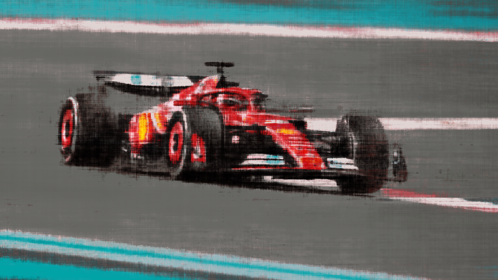

Below is a description of the model that I used in order to create this Neural Field. This model is the
simple multi-layer perceptron that was described in the project spec.
Architecture of my NeRF model
I did hyper parameter tuning between
the following values. Learning Rate = 0.01, 0.005, 0. and. L = 5, 10, 20. The best combination was
having
Lr=0.01 and L (highest frequency) = 20. This gave me a MSE loss of 0.0025077678728848696 and a PSNR of
26.007126656845337. Below is the PSNR and Loss Plots.
Validation LossValidation PSNR
Here is the visualization of the training process
Here is the similar process done on the following image:
Original Image
I found that the best values were
Validation LossValidation PSNR
Here is the visualization of the training process

Part 2: Fit a Neural Radiance Field from Multiple Images
Implemenation Details
Creating Rays from Cameras
I first created a method to transform from the pixel coordinates to camera coordinates using the
function pixel_to_camera. As was described in the spec, this function uses the intrinsics of the
camera in order to transform pixels to their corresponding locations relative to the camera.
I then created a function to transform from the camera space to the world space. This was called
pixel_to_ray and used both the intrinsics and extrinsics of the camera in order to transform
from the pixel space to the ray that that pixel corresponds to in the world space.
Sampling
Now that I have functions to translate between pixel locations and their corresponding rays, I
built a dataloader that would given a set of training images, sample rays and their
corresponding pixel values. This dataloader would take in a set of images, their corresponding
c2w matrices and output a randomly sampled set of ray origins, directions, and ray pixel values.
Below is a visualization of using this to sample some images.
Sampling points from 1 imageSampling Points from many images
Training
I trained the Neural Radiance Field using this sampling data. I used the default Implemenation
described in the spec, which I have attached below.
Architecture of my NeRF model
The model output estimated pixel values and densities. In order turn that into an actual image I
used the following discrete approximation of the volume rendering function. This equation would
give me RGB values that I could compare with the ground truth in order to train my model.
Volume Rendering Equation
Using this and an Adam Optimizer with learning rate 0.0001, I was able to train a NeRF on these
images. My final PSNR was 24.27 and my final MSE Loss was 0.0037. These were both on the entire
validation set.
Here are my plots for the validation loss and PSNR
Validation LossValidation PSNR
Here are sample images from iteraitons of training, along with a gif showing the entire training
process
Entire Training Process
Finally we can use our NeRF to visualize the image from new points of view that we haven't seen
before. Here is a 360 spin around the lego truck, views we have never directly seen before.
Visualization of Novel Camera Positions
Bells and Whistles
Adding Background Colors
In order to change the background colors, we need to look at the rays where there is low probability that
the pixel is there in the range. We can do this based off of our volumetric rendering function. We can
then scale this by the designed color to get the following output.